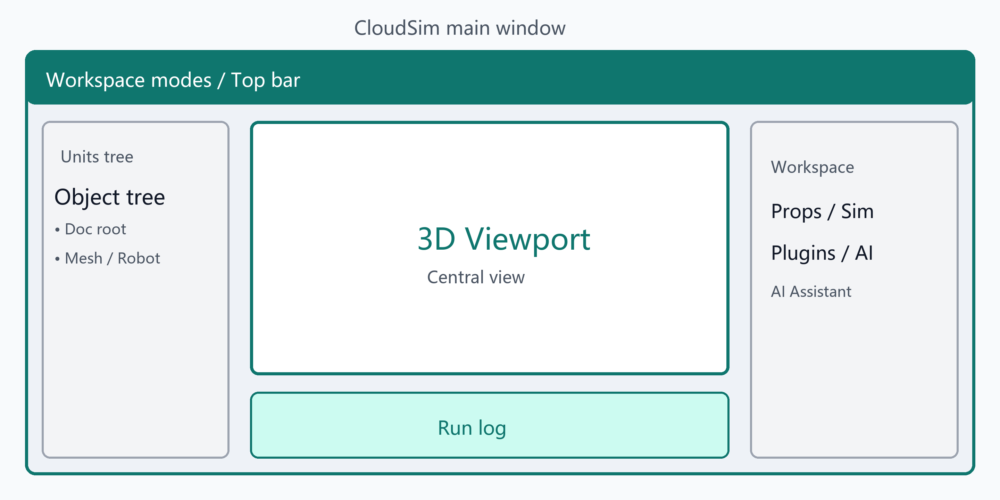

主窗口布局示意
入门与主界面
启动后布局
- 中央：文档标签页中的三维视口；下方为运行日志（Run Info）
- 左侧：对象/单元树（Units）、场景结构
- 右侧：工作区标签（属性、设备、仿真相关页、插件页、AI 助手等）
- 顶栏：工作区模式切换（主程序 / 几何建模 / 工艺流程 / 工程图）
工作区模式只切换工具与 Ribbon，不会清空场景对象；同一文档内的模型在各模式间共享。
菜单栏
| 菜单 | 主要功能 |
|---|
| 文件 | 新建文档、打开/保存工程、打开模型、打开点云、退出 |
| 视图 | 重置布局、左右面板显示、交互模式、Gizmo 局部/世界系 |
| 插入 | 创建坐标系 |
| 设置 | 模式切换、主题、语言 |
| 帮助 | 帮助文档、关于 CloudSim |
部分插件还会注册 工具（Tools） 等菜单项。
工作区模式
- 主程序：三维仿真、导入、机器人与通用插件侧栏
- 几何建模：特征树 + Ribbon 草图/实体特征
- 工艺流程：流程画布与 DES 仿真（替换中央三维区）
- 工程图：出图、标注、导出图纸
也可通过 设置 → 模式切换 或快捷键 Ctrl+1～Ctrl+4 切换（插件已加载时可用）。
仿真相关 Dock（主程序）
典型标签包括：指令、关节轴、坐标系（工具/用户）、外部轴、轨迹编辑/生成、机器人通讯、碰撞等（以当前加载插件与布局为准）。
设备页提供 URDF 等机器人导入入口。